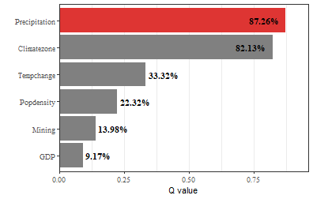
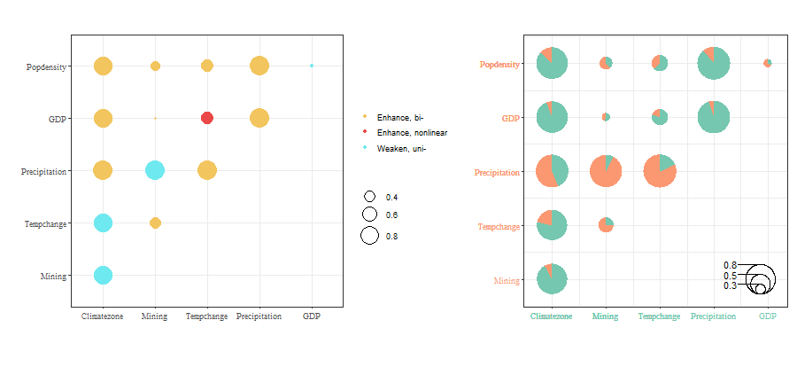
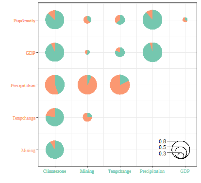

The GOZH(geographically
optimal zones-based heterogeneity) model generates the optimal
spatial zone based on the binary classification of the decision tree and
then calculates the power of determinants.The LESH(locally
explained heterogeneity model) based on GOZH model and combined with
additive shapely theory to reasonably allocate variable interaction’s
power of determinants.In this vignette ,we use ndvi data in
gdverse package to demonstrate the spatial
heterogeneity explanation based on GOZH and
LESH model.
Load data and package
library(gdverse)
library(tidyverse)
data("ndvi")
head(ndvi)
## # A tibble: 6 × 7
## NDVIchange Climatezone Mining Tempchange Precipitation GDP Popdensity
## <dbl> <chr> <fct> <dbl> <dbl> <dbl> <dbl>
## 1 0.116 Bwk low 0.256 237. 12.6 1.45
## 2 0.0178 Bwk low 0.273 214. 2.69 0.801
## 3 0.138 Bsk low 0.302 449. 20.1 11.5
## 4 0.00439 Bwk low 0.383 213. 0 0.0462
## 5 0.00316 Bwk low 0.357 205. 0 0.0748
## 6 0.00838 Bwk low 0.338 201. 0 0.549Univariate power of determinants detection
gozh.uvi = gozh(NDVIchange ~ ., data = ndvi)
gozh.uvi
##
## Spatial Stratified Heterogeneity Test
##
## Factor detector
##
## | variable | Q-statistic | P-value |
## |:-------------:|:-----------:|:------------:|
## | Precipitation | 0.87255056 | 4.515558e-10 |
## | Climatezone | 0.82129550 | 2.500763e-10 |
## | Tempchange | 0.33324945 | 1.121618e-10 |
## | Popdensity | 0.22321863 | 2.998225e-10 |
## | Mining | 0.13982859 | 5.985420e-11 |
## | GDP | 0.09170153 | 3.958823e-10 |
plot(gozh.uvi)
Variable interaction detection
gozh.bi = gozh(NDVIchange ~ ., data = ndvi,type = 'interaction')
gozh.bi
##
## Spatial Stratified Heterogeneity Test
##
## Interaction detector
##
## | Interactive variable | Interaction |
## |:---------------------------:|:------------------:|
## | Climatezone ∩ Mining | Weaken, uni- |
## | Climatezone ∩ Tempchange | Weaken, uni- |
## | Climatezone ∩ Precipitation | Enhance, bi- |
## | Climatezone ∩ GDP | Enhance, bi- |
## | Climatezone ∩ Popdensity | Enhance, bi- |
## | Mining ∩ Tempchange | Enhance, bi- |
## | Mining ∩ Precipitation | Weaken, uni- |
## | Mining ∩ GDP | Enhance, bi- |
## | Mining ∩ Popdensity | Enhance, bi- |
## | Tempchange ∩ Precipitation | Enhance, bi- |
## | Tempchange ∩ GDP | Enhance, nonlinear |
## | Tempchange ∩ Popdensity | Enhance, bi- |
## | Precipitation ∩ GDP | Enhance, bi- |
## | Precipitation ∩ Popdensity | Enhance, bi- |
## | GDP ∩ Popdensity | Weaken, uni- |
plot(gozh.bi)Variable interaction contribution
lesh.m = lesh(NDVIchange ~ ., data = ndvi,cores = 6)
lesh.m
##
## Spatial Interaction Association Detector
##
## LESH Model
##
## | Interactive variable | Interaction |
## |:---------------------------:|:------------------:|
## | Climatezone ∩ Mining | Weaken, uni- |
## | Climatezone ∩ Tempchange | Weaken, uni- |
## | Climatezone ∩ Precipitation | Enhance, bi- |
## | Climatezone ∩ GDP | Enhance, bi- |
## | Climatezone ∩ Popdensity | Enhance, bi- |
## | Mining ∩ Tempchange | Enhance, bi- |
## | Mining ∩ Precipitation | Weaken, uni- |
## | Mining ∩ GDP | Enhance, bi- |
## | Mining ∩ Popdensity | Enhance, bi- |
## | Tempchange ∩ Precipitation | Enhance, bi- |
## | Tempchange ∩ GDP | Enhance, nonlinear |
## | Tempchange ∩ Popdensity | Enhance, bi- |
## | Precipitation ∩ GDP | Enhance, bi- |
## | Precipitation ∩ Popdensity | Enhance, bi- |
## | GDP ∩ Popdensity | Weaken, uni- |
plot(lesh.m, pie = TRUE, scatter = TRUE)
Compared to GOZH Interaction Detector , LESH only has a decomposition of the interactive contribution of variables,and the rest remains consistent.
So you can just look at the contribution part of the variable interaction:
plot(lesh.m, pie = TRUE, scatter = FALSE)
By accessing the concrete result through
lesh.m$interaction, which returns a
tibble.
lesh.m$interaction
## # A tibble: 15 × 8
## variable1 variable2 Interaction `Variable1 Q-statistics`
## <chr> <chr> <chr> <dbl>
## 1 Climatezone Mining Weaken, uni- 0.821
## 2 Climatezone Tempchange Weaken, uni- 0.821
## 3 Climatezone Precipitation Enhance, bi- 0.821
## 4 Climatezone GDP Enhance, bi- 0.821
## 5 Climatezone Popdensity Enhance, bi- 0.821
## 6 Mining Tempchange Enhance, bi- 0.140
## 7 Mining Precipitation Weaken, uni- 0.140
## 8 Mining GDP Enhance, bi- 0.140
## 9 Mining Popdensity Enhance, bi- 0.140
## 10 Tempchange Precipitation Enhance, bi- 0.333
## 11 Tempchange GDP Enhance, nonlinear 0.333
## 12 Tempchange Popdensity Enhance, bi- 0.333
## 13 Precipitation GDP Enhance, bi- 0.873
## 14 Precipitation Popdensity Enhance, bi- 0.873
## 15 GDP Popdensity Weaken, uni- 0.0917
## # ℹ 4 more variables: `Variable2 Q-statistics` <dbl>,
## # `Variable1 and Variable2 interact Q-statistics` <dbl>,
## # `Variable1 SPD` <dbl>, `Variable2 SPD` <dbl>